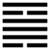

Hỏa Phong Đỉnh (鼎 dǐng)
Cách là biến đổi, có công dụng “cách vật” (biến đổi các vật ) dễ thấy nhất là cái đỉnh (vạc) vì nó dùng để nấu ăn, biến đồ sống thành đồ chín; cho nên sau quẻ Cách tới quẻ Ðỉnh.
Thoán từ:
鼎: 元吉, 亨．
Ðỉnh: Nguyên cát, hanh.
Dịch: Vạc (nấu ăn): rất tốt, hanh thông.
Giảng: Nhìn hình của quẻ, ta thấy vạch đứt ở dưới cùng như cái chân vạc, ba vạch liền ở trên như cái thân vạc trong chứa thức ăn, vạch đứt ở trên nữa như hai tai vạc vạch liền ở trên cùng là cái đòn để khiêng vạc, vì vậy gọi là quẻ đỉnh.
Theo nghĩa thì nội quái Tốn là cây, gỗ (ở đây không nên hiểu tốn là gió), ngoại quái Ly là lửa; đút cây vào lửa để đốt mà nấu thức ăn.
Ở trên đã xét quẻ Tỉnh, về việc uống; ở đây là quẻ Đỉnh, về việc ăn. Cổ nhân trong việc nấu nướng, trước hết để tế Thượng đế, rồi để nuôi bậc thánh hiền. Tế Thượng đế thì cốt thành tâm, nuôi thánh hiền thì cốt trọng hậu. Đó là ý nghĩa câu trong Thoán truyện.
“thánh nhân phanh (chữ ở đây đọc là phanh như chữ dĩ hưởng Thượng đế, nhi đại phanh (đại ở đây là trọng hậu dưỡng thánh hiền”. Vì vậy quẻ Ðỉnh có cái nghĩa rất tốt.
Quẻ Ly có đức thông minh, sáng suốt; quẻ Tốn có đức vui thuận; hào 5, âm nhu mà được ngôi chí tôn, đắc trung, ứng với hào 2 dương cương ở dưới ; vậy quẻ Đỉnh có đủ những đức sáng suốt, vui thuận, đắc trung, cương (hào 2) nhu (hào 5) ứng viện nhau để làm việc đời, thì có việc gì mà không hanh thông?
Ý nghĩa các hào:
1.
初六: 鼎顛趾, 利出否, 得妾, 以其子, 无咎．
Sơ lục: Đỉnh điên chỉ, lợi xuất bĩ, đắc thiếp, dĩ kì tử, vô cữu
Dịch: Hào 1, âm :Vạc chống chân lên, trút những đồ dơ bụi bặm (bĩ) ra thì lợi; (ngẫu nhiên gặp may) như gặp được người thiếp để sinh con cho mình, không lỗi.
Giảng: Hào này là cái chân vạc, âm nhu mà ứng với hào 4 dương cương ở trên có cái tượng chống chân lên trên, tuy xấu, nhưng vì vạc chưa đựng thức ăn, chưa đặt lên bếp thì nhân nó chống chân lên mà trút hết các dơ bẩn ra, rốt cuộc hoá tốt; ngẫu nhiên gặp may như người đàn ông có vợ rồi, gặp một người thiếp thấp hèn nhưng sinh con cho mình, không có lỗi.
2.
九二: 鼎有實, 我仇有疾, 不我能即, 吉．
Cửu nhị: Đỉnh hữu thực, ngã cửu hữu tật, bất ngã năng tức, cát.
Dịch: Hào 2, dương: Vạc chứa thức ăn rồi; kẻ thù oán ta vì ghen tuông, nhưng không tới gần ta được. tốt.
Giảng: Hào này dương cương ở vị trung, hữu dụng rồi như cái vạc đã chứa thức ăn. Vì nó thân với hào 5 ở trên, mà không để ý đến hào 1 âm ở sát nó, nên nó bị 1 ghen tương mà oán nó. Nhưng nó quân tử, ứng với hào 5, nên 1 không tới gần mà hãm hại được nó. Nên cẩn thận thôi, vẫn là tốt.
3.
九三: 鼎耳革, 其行塞, 雉膏不食．方雨, 虧悔, 終吉．
Cửu tam: Đỉnh nhĩ cách, kì hành tắc, trĩ cao bất thực; phương vũ, khuy hối, chung cát.
Dịch: Hào 3, dương: như cái tai vạc dương thay đổi, chưa cất vạc lên được, thành thử mỡ chim trĩ (mỡ ngon) chưa đem ra cho người ta ăn; nhưng sắp mưa rồi, không còn ăn năn nữa, kết quả sẽ tốt.
Giảng: Hào này ở giữa lòng vạc, dương cương, là hạng người tốt, có hào trên cùng ứng với nó, nhưng bị hào 5 ngăn cách (cũng như cái tai vạc hào 5 còn dương sửa, chưa cất vạc lên được) thành thử chưa đắc dụng, cũng như món ăn (hào 3) chưa đem ra cho người ta ăn được. Nhưng 3 có tài, lại chính đáng (dương ở vị dương) thì chẳng bao lâu 5 vả sẽ hợp nhau, âm(5) dương (3) giao hào, tượng như trời sắp mưa, không còn gì ân hận nữa; lúc đó 3 sẽ đắc dụng, kết quả sẽ tốt.
4.
九四: 鼎折足, 覆公餗其形渥, 凶．
Cửu tứ: Đỉnh chiết túc, phúc công tốc (túc) kì hình ốc, hung.
Dịch: Hào 4, dương: Chân vạc gẫy, đánh đổ thức ăn của nhà công hầu, mà bị hình phạt nặng, xấu.
Giảng: Hào này ở vị cao, gần ngôi chí tôn, vậy là có trách nhiệm lớn, nhưng ứng hợp với 1, âm nhu ở dưới, nên không gánh nỗi trách nhiệm, như cái vạc gẩy chân, đánh đổ thức ăn, mà bị tội.
Theo Hệ từ hạ truyên Chương v, Khổng tử cho rằng hào này cảnh cáo những kẻ đức mỏng mà ngôi tôn, trí nhỏ mà mưu lớn, sức yếu mà gánh nặng.
5.
六五: 鼎黃耳, 金鉉, 利貞．
Lục ngũ: Đỉnh hoàng nhĩ, kim huyễn, lợi trinh.
Dịch: Hào 5, âm: Vạc có tai màu vàng, có đòn xâu bằng kim khí; giữ được đạo chính thì bền.
Giảng: Hào này là cái quai vạc, đắc trung cho nên tượng bằng màu vàng; ở trên nó là hào dương cương, tượng bằng cái đòn xâu bằng kim khí (chất cứng), vậy là người có tài, đức, chỉ cần giữ được đạo chính thôi.
6.
上九: 鼎玉鉉, 大吉, 无不利.
Thượng cửu: Đỉnh ngọc huyễn, đại cát, vô bất lợi.
Dịch: Hào trên cùng dương: vạc có cái đòn xâu bằng ngọc rất tốt, không gì là không lợi.
Giảng: Hào trên cùng này là cái đòn để xâu vào tai vạc mà khiêng; nó dương cương mà ở vị âm (chẳn), vừa cương vừa nhu, nên ví nó với chất ngọc vừa cứng vừa ôn nhuận. Ở cuối thời Đỉnh, như vậy là rất tốt.
*
Quẻ này cũng như quẻ Tỉnh, hào trên cùng tốt nhất vì tới lúc thành công.